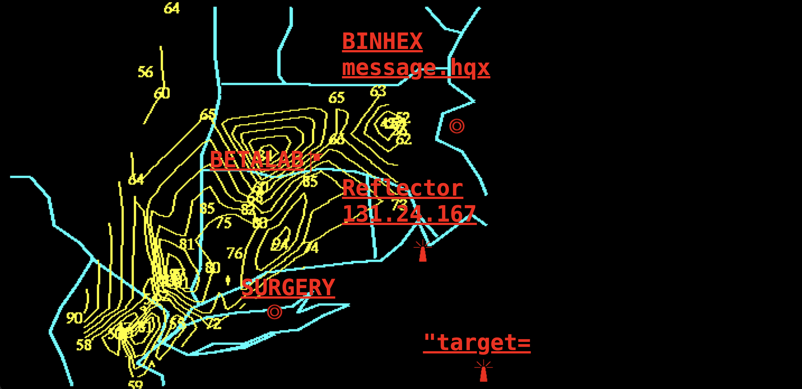
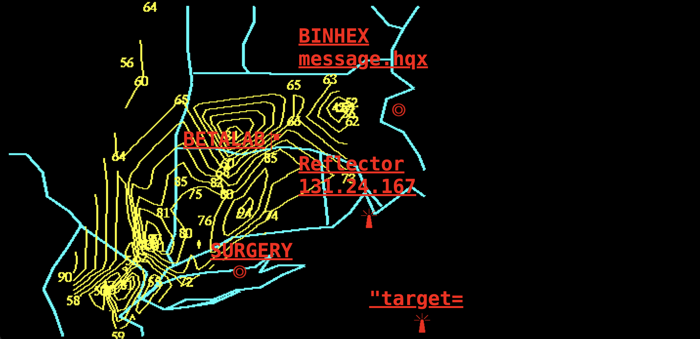

My%Desktop
 

A highly disordered and bug-crazy net art that simulates a runaway desktop. Upon entering the project, the participants are greeted with random windows, distorted imagery, and reverse behavior such as a computer crash or virus. Instead of presenting a typical narrative, the work places the viewer in a dreamlike, disorienting environment that defies expectations regarding how computers are supposed to behave. The interactivity is the key to making the connection with the viewer deeper. Since the user is actually interacting with what appears to be a hacked system, the experience is intimate and personal—suspension of the line between art and the viewer's own machine.